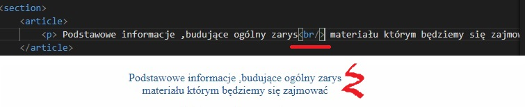
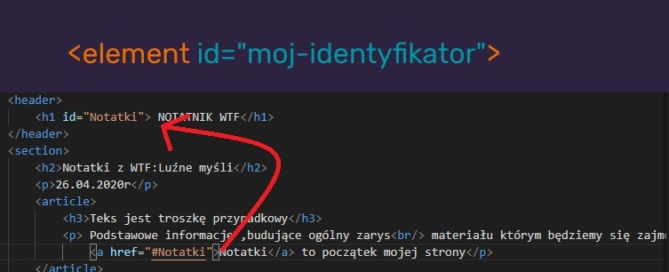

II Tydzień

Znacznik "br" ma za zadanie podział tekstu.
Nie
stosujemy go do robienia przerw w teksie.
Znacznik "b=strong,i=em"Znacznik "b"pogrubia tekst natomiast znaznik"strong"pogrubia teks oraz zaznacza ze tekst jest ważny(dla przegladarki).Znacznik "i"sprawia ze tekst jest pisany kursywą a znacznik "em"mówi nam ze tekst moze mieć znaczenie ironiczne(przegladarka moze go tak interpretować).
Oznaczenie elementu znacznikiem "id"pozwala nam na szybkie przejście w miejsce gdzie sie ten element znajduje.Nawigacja wewnątrz dokumentu